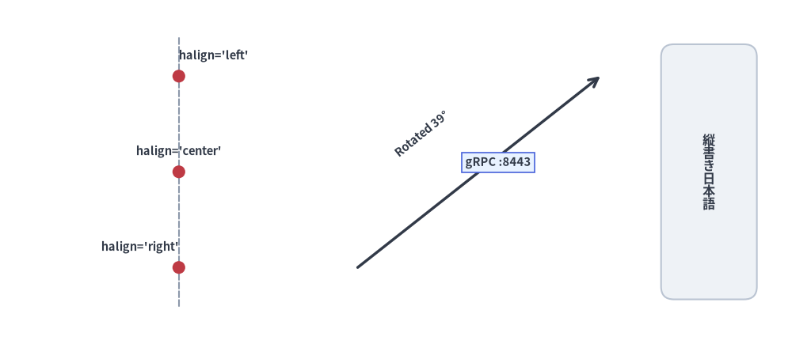
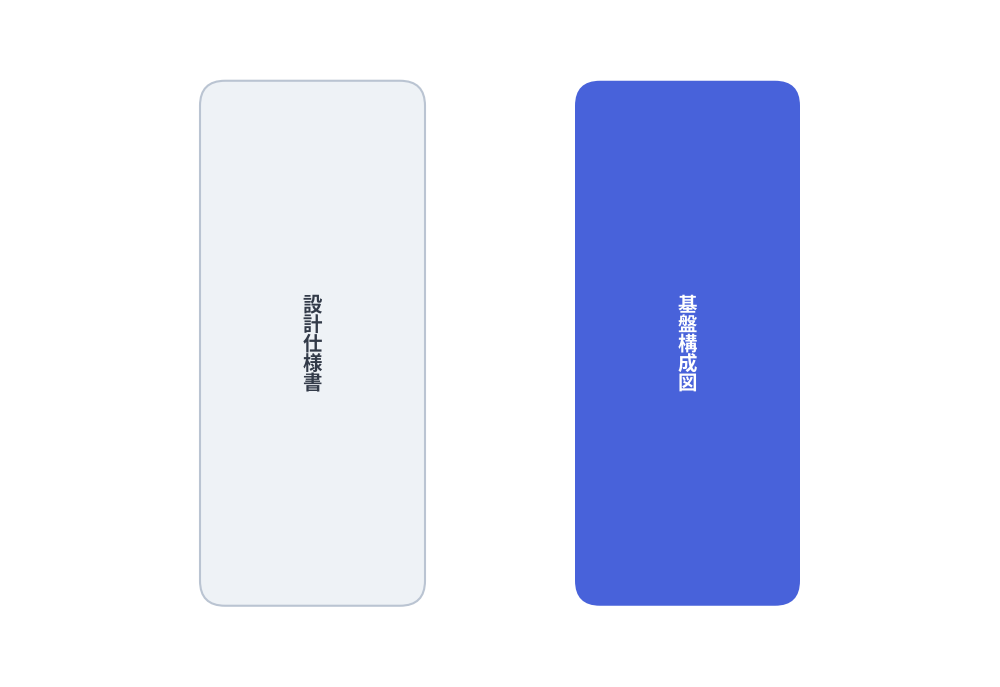
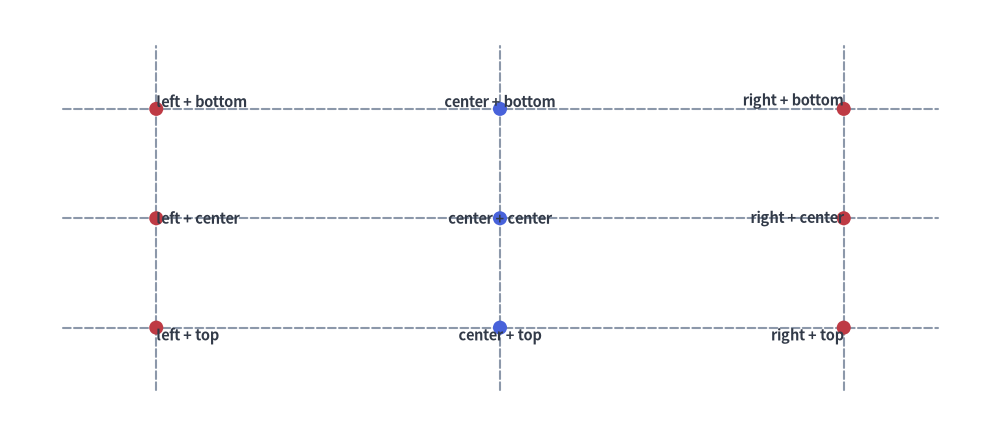
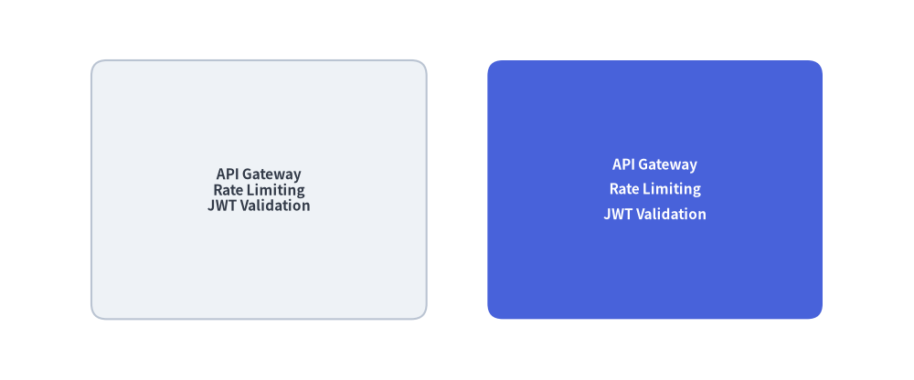
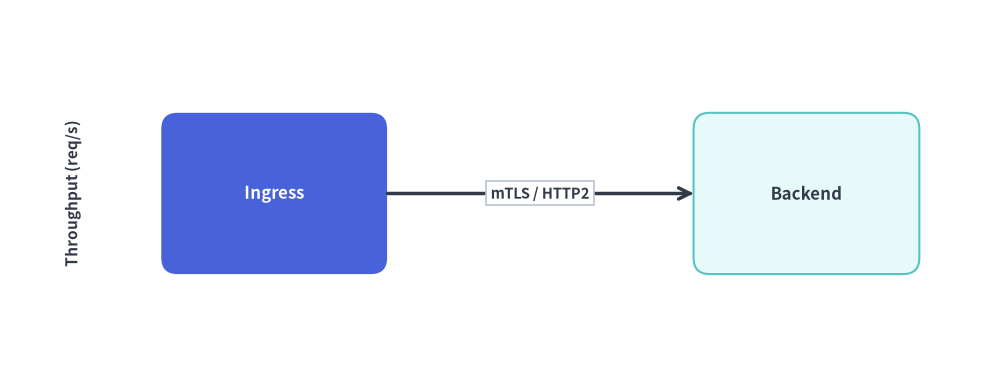
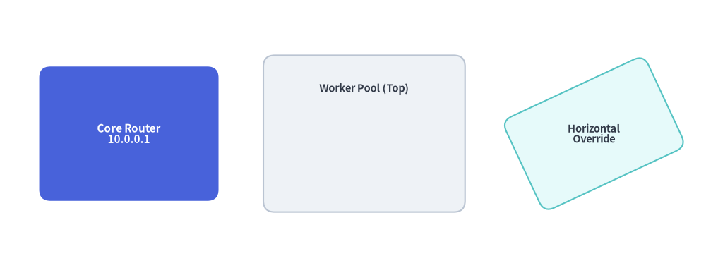

テキストとタイポグラフィ
明瞭なタイポグラフィと正確な座標アライメントは、読みやすい技術図解に不可欠です。 Drawlib は、横書きテキスト、東アジア言語（CJK）向けの縦書きテキスト、任意の角度での回転、複数行フォーマット、パディング付きの背景バッジ、および図形へのシームレスな埋め込みラベルを提供します。
1. テキスト描画の概要

Source Code
from drawlib.canvas import save, setup
from drawlib.lines import line
from drawlib.shapes import circle, rectangle
from drawlib.styles import Colors, Styles
from drawlib.text import text, text_vertical
setup(width=124, height=54)
# 1. Anchor alignment along x=28 guide line (left column)
line((28, 6), (28, 48), style=Styles.MutedDashed)
for y, align, label in [(42, "left", "halign='left'"), (27, "center", "halign='center'"), (12, "right", "halign='right'")]:
circle((28, y), radius=1.0, style=Styles.DangerFlat)
text((28, y + 2.2), label, style=Styles.DarkBold.patch(text_size=10.5, halign=align, valign="bottom"))
# 2. Rotated text & background badge over a connector line (middle column)
line((56, 12), (94, 42), arrow_head="->", style=Styles.DarkBold)
text((66, 33), "Rotated 39°", style=Styles.DarkBold.patch(text_size=10.5, angle=39))
badge_style = Styles.DarkBold.patch(
text_size=10.5,
text_bg_fill_color=Colors.Primary1,
text_bg_line_color=Colors.Primary4,
text_bg_line_width=1.2,
)
text((78, 28.5), "gRPC :8443", style=badge_style)
# 3. Vertical CJK typography (right column)
rectangle((111, 27), width=15, height=40, style=Styles.Neutral.patch(shape_r=2))
text_vertical((111, 27), "縦書き日本語", style=Styles.DarkBold.patch(text_size=11.5))
save()
2. 基本テキスト関数 (drawlib.text)
単体のテキスト描画プリミティブはすべて drawlib.text からインポートします。
from drawlib.text import text, text_vertical
2.1. 横書き・回転テキスト (text)
text(
xy: tuple[float, float],
text: str,
*,
style: Style | None = None,
) -> None
xy: キャンバス単位での座標アンカー位置(x, y)。text: 描画する文字列。改行文字\nによる複数行テキストに対応しています。style: 任意のStyleインスタンス（省略時はStyles.Dark／有効なテーマのデフォルト）。フォントファミリー、ポイントサイズ、文字色、配置揃え（halign、valign）、回転角（angle）、座標オフセット（xy_shift、xy_abs_shift）、および背景バッジ枠（text_bg_*）を制御します。
2.2. CJK 縦書きテキスト (text_vertical)
日本語や中国語などの東アジア文字を、垂直中心線（halign="center"）に沿って上から下へ文字を積み重ねる伝統的な縦書きレイアウトで描画します。
from drawlib.canvas import save, setup
from drawlib.shapes import rectangle
from drawlib.styles import Styles
from drawlib.text import text_vertical
setup(width=80, height=55)
rectangle((25, 27.5), width=18, height=42, style=Styles.Neutral.patch(shape_r=2))
text_vertical((25, 27.5), "設計仕様書", style=Styles.DarkBold.patch(text_size=14))
rectangle((55, 27.5), width=18, height=42, style=Styles.PrimaryFlat.patch(shape_r=2))
text_vertical((55, 27.5), "基盤構成図", style=Styles.WhiteBold.patch(text_size=14))
save()

3. Style のタイポグラフィ・背景属性
Drawlib では、個別の TextStyle オブジェクトや散在するキーワード引数を渡す代わりに、タイポグラフィ・配置揃え・座標変換・背景バッジに関するすべての属性をイミュータブルな Style モデル（.patch() でカスタマイズ可能）に統合しています。
| 属性 | 型 | デフォルト | 説明 |
|---|---|---|---|
text_color |
Color | tuple | str |
テーマ既定値 | 文字グリフの塗りつぶし色（例: Colors.Gray7、Colors.White、"#1a73e8"）。 |
text_size |
float | str |
16.0 |
ポイント単位のフォントサイズ（例: 10、14、20）、または "small"、"medium"、"large"。 |
text_font |
FontBase | FontFile |
Font.SANSSERIF_REGULAR |
drawlib.fonts のフォントファミリーおよびウェイトトークン。 |
halign |
"left" | "center" | "right" |
"center" |
アンカー x に対する水平方向の配置揃え。 |
valign |
"bottom" | "center" | "top" |
"center" |
アンカー y に対する垂直方向の配置揃え。 |
text_line_spacing |
float |
1.2 |
複数行文字列における行高（ラインハイト）倍率。 |
angle |
float |
0.0 |
アンカー xy を中心とした反時計回りの回転角（度）。 |
text_flip |
bool |
False |
図形への埋め込みテキストを 180° 反転させ、文字が上下逆さまになるのを防ぎます。 |
xy_shift |
tuple[float, float] |
None |
angle の回転に追従する相対 (dx, dy) オフセット。 |
xy_abs_shift |
tuple[float, float] |
None |
回転に依存しないキャンバス上の絶対 (dx, dy) オフセット。 |
text_bg_fill_color |
Color | tuple | str |
None |
テキストブロック背面に描画するパディング付き背景バッジの塗りつぶし色。 |
text_bg_line_color |
Color | tuple | str |
None |
背景バッジの枠線色。 |
text_bg_line_width |
float |
1.0 |
背景バッジの枠線幅（枠線なしにする場合は 0）。 |
text_bg_line_style |
"solid" | "dashed" | "dotted" | "dashdot" |
"solid" |
背景バッジの枠線パターン。 |
4. 座標アンカーの配置揃え (halign と valign)
デフォルトでは、text() はテキストのバウンディングボックスを xy に対して水平中央（halign="center"）・垂直中央（valign="center"）に配置します。halign と valign を変更することで、テキストボックスの特定の辺を xy に固定できます。
halign="left":xを左端として右側へテキストが伸びます。halign="center"（デフォルト）:xを中心として水平方向の中央に配置されます。halign="right":xを右端として左側へテキストが伸びます。valign="top":yを上端として下方向へテキストが配置されます。valign="center"（デフォルト）:yを中心として垂直方向の中央に配置されます。valign="bottom":yを下端ベースラインとして上方向へテキストが配置されます。
from drawlib.canvas import save, setup
from drawlib.lines import line
from drawlib.shapes import circle
from drawlib.styles import Styles
from drawlib.text import text
setup(width=128, height=56)
# Crosshair guide lines
for y in [42, 28, 14]:
line((8, y), (120, y), style=Styles.MutedDashed)
for x in [20, 64, 108]:
line((x, 6), (x, 50), style=Styles.MutedDashed)
# Left-aligned column (x = 20)
for y, v_mode in [(42, "bottom"), (28, "center"), (14, "top")]:
circle((20, y), radius=0.9, style=Styles.DangerFlat)
text((20, y), f"left + {v_mode}", style=Styles.DarkBold.patch(text_size=10.5, halign="left", valign=v_mode))
# Center-aligned column (x = 64)
for y, v_mode in [(42, "bottom"), (28, "center"), (14, "top")]:
circle((64, y), radius=0.9, style=Styles.PrimaryFlat)
text((64, y), f"center + {v_mode}", style=Styles.DarkBold.patch(text_size=10.5, halign="center", valign=v_mode))
# Right-aligned column (x = 108)
for y, v_mode in [(42, "bottom"), (28, "center"), (14, "top")]:
circle((108, y), radius=0.9, style=Styles.DangerFlat)
text((108, y), f"right + {v_mode}", style=Styles.DarkBold.patch(text_size=10.5, halign="right", valign=v_mode))
save()

5. 複数行テキストと行間制御 (text_line_spacing)
文字列中に \n を挿入すると複数行に改行されます。行間のリズムを調整するには、Style の text_line_spacing を指定します（デフォルト倍率は 1.2）。
from drawlib.canvas import save, setup
from drawlib.shapes import rectangle
from drawlib.styles import Styles
setup(width=120, height=50)
sample = "API Gateway\nRate Limiting\nJWT Validation"
# Default line spacing (1.2x)
rectangle(
(34, 25),
width=44,
height=34,
style=Styles.Neutral.patch(shape_r=2),
text=sample,
text_style=Styles.DarkBold.patch(text_size=11),
)
# Relaxed line spacing (1.7x)
rectangle(
(86, 25),
width=44,
height=34,
style=Styles.PrimaryFlat.patch(shape_r=2),
text=sample,
text_style=Styles.WhiteBold.patch(text_size=11, text_line_spacing=1.7),
)
save()

6. 回転ラベル (angle) と背景バッジ (text_bg_*)
- 回転 (
angle):xyを中心として反時計回りの度数でテキストを回転させます。 - 背景バッジ (
text_bg_fill_color,text_bg_line_color,text_bg_line_width,text_bg_line_style): テキストの背面にパディング付きの矩形ピルを描画します。コネクタ線の上にプロトコル名やレイテンシ注釈を重ねても、線が文字を横切って読みづらくならないため最適です。
from drawlib.canvas import save, setup
from drawlib.lines import line
from drawlib.shapes import rectangle
from drawlib.styles import Colors, Styles
from drawlib.text import text
setup(width=124, height=48)
# Rotated vertical Y-axis title (angle=90)
text((9, 24), "Throughput (req/s)", style=Styles.DarkBold.patch(text_size=11.0, angle=90))
# Service nodes
rectangle((34, 24), width=28, height=20, style=Styles.PrimaryFlat.patch(shape_r=2), text="Ingress", text_style=Styles.WhiteBold.patch(text_size=12.0))
rectangle((100, 24), width=28, height=20, style=Styles.SecondaryNeutral.patch(shape_r=2), text="Backend", text_style=Styles.DarkBold.patch(text_size=12.0))
# Connector with overlaid background badge
line((48, 24), (86, 24), arrow_head="->", style=Styles.DarkBold)
badge = Styles.DarkBold.patch(
text_size=10.5,
text_bg_fill_color=Colors.White,
text_bg_line_color=Colors.Gray4,
text_bg_line_width=1.2,
text_bg_line_style="solid",
)
text((67, 24), "mTLS / HTTP2", style=badge)
save()

7. 図形への埋め込みテキスト (text= と text_style=)
drawlib.shapes のすべての図形プリミティブ（rectangle、circle、cylinder、rhombus、chevron など）は引数 text と text_style を直接受け取るため、別途 text() を呼ぶために中心座標を計算し直す必要がありません。
- 輝度に基づく自動コントラスト調整:
text_styleを省略すると、Drawlib は図形の塗りつぶし色の輝度を判定し、視認性の高い濃色テキストまたは白抜きテキストを自動選択します。 - 埋め込みラベルの位置オフセット (
xy_shift/xy_abs_shift):text_styleにxy_shift=(dx, dy)をパッチすると、図形中心からラベル位置を微調整できます（コンテナカードの上部に見出しを寄せる場合などに便利です）。 - ラベル角度の個別指定 (
angle/text_flip): 埋め込みテキストはデフォルトで図形と一緒に回転しますが、text_styleにangleまたはtext_flip=Trueを指定することでラベルの向きを上書きできます。
from drawlib.canvas import save, setup
from drawlib.shapes import rectangle
from drawlib.styles import Styles
setup(width=126, height=48)
# 1. Centered embedded text with explicit WhiteBold style
rectangle(
(23, 24),
width=32,
height=24,
style=Styles.PrimaryFlat.patch(shape_r=2),
text="Core Router\n10.0.0.1",
text_style=Styles.WhiteBold.patch(text_size=11.0),
)
# 2. Shifted embedded header using xy_shift=(0, 8)
rectangle(
(65, 24),
width=36,
height=28,
style=Styles.Neutral.patch(shape_r=2),
text="Worker Pool (Top)",
text_style=Styles.DarkBold.patch(text_size=10.5, xy_shift=(0, 8)),
)
# 3. Rotated shape with horizontal text override (angle=0 on text_style)
rectangle(
(106, 24),
width=28,
height=18,
style=Styles.SecondaryNeutral.patch(shape_r=2, angle=25),
text="Horizontal\nOverride",
text_style=Styles.DarkBold.patch(text_size=10.5, angle=0),
)
save()
